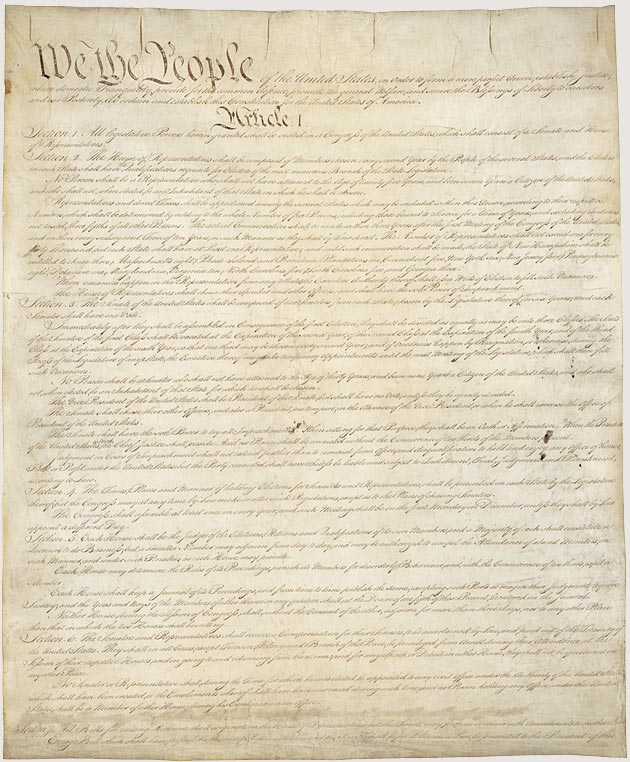
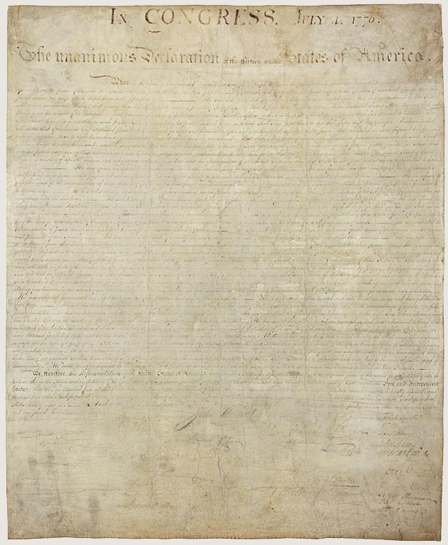
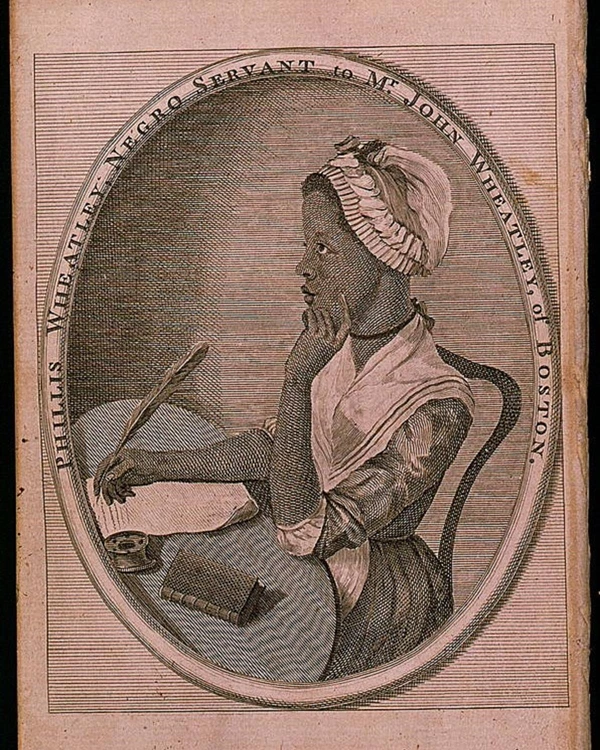

UN ATLANTE DI IDEE, CONFLITTI E DIRITTI
LA RIVOLUZIONE
AMERICANA
Dalle colonie agli Stati Uniti · 1763–1791
Diritti proclamati. Libertà contesa.
Una Repubblica da costruire.


1776 / 1787LE PAROLE CHE FONDANO UNO STATO
Libertà per chi?
Come può una rivoluzione proclamare diritti universali e nascere dentro una società che non li riconosce ancora a tutti?
Esplora il problema →
UNDICI PROSPETTIVEFigure chiave
Da Washington e Franklin ad Abigail Adams e Phillis Wheatley.
Incontra i protagonisti →Documenti e ritratto d’epoca · National Archives / Library of Congress, via National Park Service · Fonti e attribuzioni